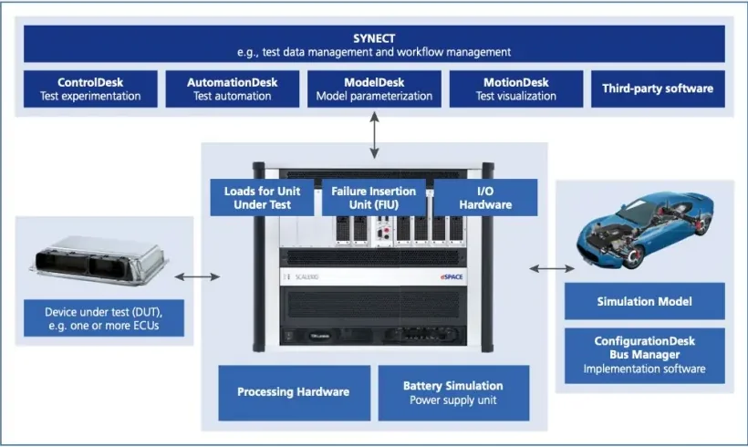
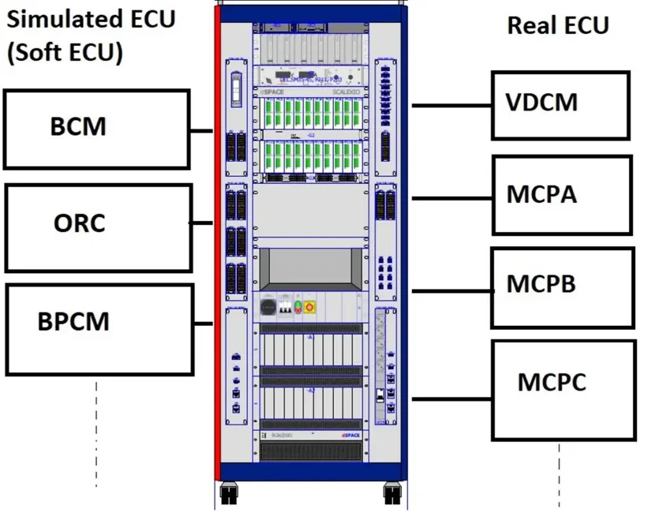
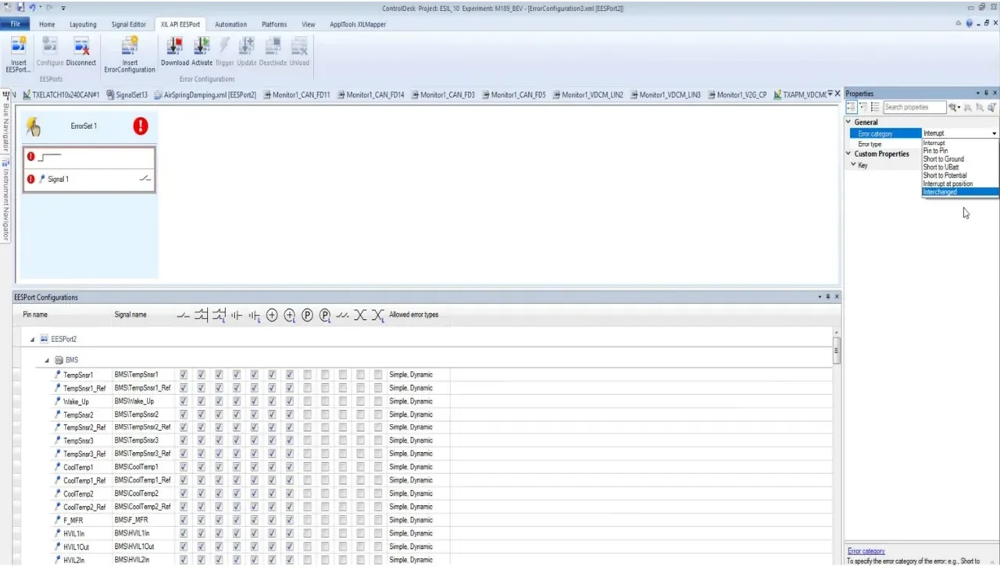

HIL Testing with dSPACE SCALEXIO & ControlDesk¶
Welcome to the bench. This lesson is where you stop reading about electronic control units (ECUs) and start driving one — without a car. A Hardware-in-the-Loop (HIL) bench puts the real ECU, running its production software on its real hardware, in the middle of a simulated vehicle: the engine, the battery, the sensors and even the other ECUs around it are all simulated in real time, and the controller can't tell the difference.
By the end of this article you'll be able to walk up to the academy's dSPACE rig, load the model in ControlDesk (dSPACE's experimentation software), drive the simulated vehicle from the dashboard, watch and record signals and CAN traffic, bend the bus to your will, inject real electrical faults, and — just as important — leave the bench exactly as you found it. Don't worry if the tool list sounds intimidating: every workflow below is a short, repeatable sequence you will have under your fingers after one session.
Why hardware-in-the-loop exists¶
HIL testing was born in the automotive industry in the 1980s, alongside the first microprocessor-based engine controllers, and has since spread to aerospace, military, naval and robotics. The idea is a bargain between two worlds:
- the controller is real — its electronics, drivers and production software are exercised exactly as in the car;
- the environment is simulated by physics-based mathematical models, so you can change, repeat and automate test scenarios at will.
On the right-hand (verification) side of the V-Cycle, that bargain buys you four things:
- speed and cost — many tests that would need a prototype vehicle run on the bench instead, shortening time-to-market;
- reproducibility — the same stimulus produces the same conditions every single time, something the road will never give you;
- safety — short circuits, sensor failures, missing messages, dangerous maneuvers: you can try all of it without risking a vehicle or a driver;
- scalability — from a single ECU up to a full networked rig.
The model is the weak link
A HIL test is only as trustworthy as the plant model behind it. If the simulated engine, battery or vehicle dynamics don't match reality closely enough, the ECU may behave perfectly on the bench and wrongly in the car. Developing and validating an accurate model of the real plant is the critical — and expensive — part of any HIL project. As a HIL user you inherit that model; as you grow into the role, you'll learn to question it.
Meet the bench: anatomy of a HIL rig¶
A typical bench has three layers: a host PC running the dSPACE software, the real-time simulator (a dSPACE SCALEXIO unit) that executes the plant model and drives the electrical interface, and the ECU(s) under test.
flowchart LR
subgraph Host["Host PC"]
CD["ControlDesk<br/>(experimentation)"]
CFG["ConfigurationDesk + Bus Manager<br/>(implementation)"]
end
subgraph Rig["SCALEXIO real-time simulator"]
PU["Processing unit<br/>runs the plant model"]
IO["I/O boards<br/>Analog / Digital / Resistive / PFM-PWM"]
BUS["CAN / LIN boards"]
FIU["Failure Insertion Unit"]
PS["Battery simulation<br/>(power supply)"]
end
ECU["Real ECU(s)<br/>under test"]
Host -- "Ethernet" --> Rig
IO -- "sensor & actuator signals" --> ECU
BUS -- "CAN / LIN" --> ECU
FIU -- "fault lines" --> ECU
PS -- "battery voltage" --> ECUThe SCALEXIO unit is what turns the model into physics. During a test it:
- runs the real-time application (the compiled plant model);
- generates the sensor signals the ECU expects to see;
- measures the command signals the ECU sends to its actuators;
- supplies battery voltage to the ECU — a programmable power supply simulates KL30 (permanent battery positive) and KL15 (ignition-switched);
- simulates electrical faults through the Failure Insertion Unit (FIU).
Its I/O channels cover every signal type a vehicle ECU touches: analog, digital, resistive (think temperature sensors), pulse-frequency/pulse-width modulated (PFM/PWM) signals, engine position simulation (crank/cam), advanced sensor protocols like SENT (Single Edge Nibble Transmission), plus real loads and actuators when the ECU must drive actual hardware.

Around the hardware sits the dSPACE software ecosystem. You will live in the first row; know the others by name:
| Tool | Role |
|---|---|
| ControlDesk | Test experimentation — the tool you will use on the bench |
| ConfigurationDesk + Bus Manager | Implementation: mapping model I/O to hardware channels and bus configurations |
| AutomationDesk | Automated test execution |
| ModelDesk | Model parameterization (driving maneuvers, road profiles) |
| MotionDesk | 3D test visualization |
| SYNECT | Test data and workflow management |
Real ECUs and "soft" ECUs on the same bus¶
Here's a concept that confuses everyone at first: a HIL rig rarely tests one ECU alone. The bench wires in several real ECUs while the remaining network nodes are simulated inside the model — this is called restbus simulation. On the academy rig the real units under test are the VDCM (Vehicle Domain Control Module) and the three motor control units MCPA, MCPB and MCPC, while the BCM (Body Control Module), ORC (Occupant Restraint Controller, i.e. the airbag unit) and BPCM (Battery Pack Control Module) exist only as soft ECUs simulated by the bench. Both kinds appear on the same CAN buses, and from the ECUs' point of view a simulated node is indistinguishable from a real one.

Conceptually, every HIL loop closes like this:
flowchart TD
subgraph SIM["Simulation (SCALEXIO)"]
PS["Physical system model"]
SN["Sensors"]
AC["Actuators"]
OE["Other ECUs<br/>(restbus)"]
end
subgraph HW["Hardware under test"]
DUT["ECU under test"]
end
PS --> SN --> DUT
DUT --> AC --> PS
OE <--> DUTThe ECU receives simulated sensor inputs and CAN traffic, computes, and its outputs (actuator commands, CAN frames) feed back into the model — the loop closes in real time, in fixed simulation steps. When you "drive the car" from ControlDesk, this is the loop you are turning.
Capturing real traffic: the vehicle-side setup¶
Before or alongside bench work you'll often need to record what the real vehicle says. The setup used in the lessons taps a vehicle CAN FD (CAN with Flexible Data-rate) line through a Break-Out Box (BOB): the harness is opened on the BOB's banana sockets and both halves of the bus are brought out to DB9 connectors. A Vector CANcaseXL interface connects the two DB9 taps to a PC, letting you log both directions of the bus (for example both sides of a gateway) simultaneously with CANalyzer/CANoe — see the CANalyzer lessons for the software side.
For measurement directly at the ECU pins, the academy also uses the ETAS ES891.1 module, which combines FETK/GE ECU interfaces with CAN FD, FlexRay and LIN channels in a single housing — handy when you need to correlate bus traffic with ECU-internal variables.
Your daily driver: ControlDesk¶
ControlDesk is the experimenting software: it connects to the running real-time application and gives you access to calibration, measurement and diagnostics, with data acquisition synchronized across ECUs, rapid control prototyping (RCP) and HIL platforms, and the bus systems. Everything you do on the bench — driving the simulated car, watching signals, recording, injecting faults — happens inside a ControlDesk project/experiment.
Loading the model and going online¶
The compiled model's variables are described to ControlDesk by an .sdf
file (system description file). A project can reference more than one
.sdf in the Project section; you pick the active one by activating it.
Which .sdf is the right one?
If you don't know which .sdf matches the current bench configuration,
ask your PL (project leader) or the HIL team — nobody expects a new
engineer to guess, and running against the wrong description file means
your instruments read the wrong variables.
Your basic start sequence, every time:
- Open the ControlDesk experiment and check in Project that the correct
project/experiment and
.sdfare activated. - Press GO ONLINE in the main view (Home ribbon). The model and all its parameters are loaded onto the platform and the simulation is ready to run.
- Verify the power supply is ON — without battery voltage the real ECUs stay dead, and you'll spend ten confused minutes debugging a bench that is simply unpowered. Everyone does this once.
To restart from a clean state, go OFFLINE and choose Reload and Start on the platform in the Platforms/Devices section.
Always reload after automation runs
Reloading the model is mandatory after the automation team has used the HIL for its test campaigns — automated suites can leave parameters, faults and overrides in an unknown state. When in doubt, reload.
Layouts and the dashboard¶
An experiment's screens are called layouts. The main layout (the Dashboard) is your virtual cockpit and normally collects:
- the most important parameters to set in the model;
- the vehicle drive commands — key position, accelerator and brake pedals, gear selection, start/stop button;
- the main driving-condition variables — engine speed, vehicle speed, drive ready, state of charge (SOC), high-voltage (HV) battery voltage, and so on.
From the Layouting ribbon you can create additional layouts and fill them with more instruments, so each test activity (I/O check, CAN monitoring, fault injection) gets its own screen instead of overloading the dashboard. Your future self will thank you for keeping these tidy.
Variables, overrides and plots¶
The Variables section is your browser into the running model: navigate the tree, then drag variables onto a layout to display them — as numeric fields, variable arrays, or in the plot editor for live curves. The two things you'll do most:
- checking the correspondence between model variables and ECU signals (does the ECU see the wheel speed the model thinks it is generating?);
- open-loop I/O tests on sensors and actuators: override a model variable (e.g. force a sensor voltage) and verify the ECU reacts as specified.
Handy trick: to write the same value to two variables at once, drag the second variable onto the first one's instrument with the right mouse button and choose Connect as Additional Write Variable. And remember: any overridden variable stays overridden until you release it — keep a mental (or written) list of everything you've forced.
Measuring and recording¶
Live plots show the current behavior; to keep the data you need a recorder:
- Click Start Measuring (Home ribbon) to begin real-time measurement.
- In the Measurement Configuration section, create a new recorder.
- Drag the variables to record into the recorder.
- Start immediate begins the log; Stop recording ends it.
- The recording lands in Project → Measurement data, and can be exported
as an
.mf4(MDF4 — Measurement Data Format 4) file for post-processing.
Bus Navigator: watching and bending CAN traffic¶
The Bus Navigator shows the bus configurations contained in the simulation application — the controllers, communication matrices, messages, protocol data units (PDUs) and signals of each bus (CAN, LIN). Applications built with the RTI CAN or LIN MultiMessage Blockset carry their bus configuration with them, so ControlDesk knows every message on every network, whether it originates from a simulated node or from a real node in the loop.
Two instruments do most of the work:
- Bus Monitor — live view of the whole message/signal flow on a bus;
- CAN Logger — records the CAN frames to a trace file.
Manipulating simulated CAN traffic¶
This is where it gets fun. For messages sent by simulated nodes, ControlDesk lets you take over the transmission — right-click a message in the Bus Navigator and Generate TX Layout. The generated layout exposes every signal of the message; switching a signal's source from Input (model-driven) to Constant lets you type the value you want on the bus. Three failure simulations are built into the same layout:
| Manipulation | How | Simulates |
|---|---|---|
| Global Enable off | deselect the checkbox at the top of the TX layout | a missing message — the node disappears from the bus |
| CRC deselected | uncheck the cyclic redundancy check in the message layout | a CRC failure on that frame |
| Message counter changed | force the counter signal | a rolling-counter failure (e.g. frozen counter) |
These are the bread and butter of diagnostic and degradation testing: the real ECUs in the loop must detect each condition and set the expected diagnostic trouble code (DTC) or fallback behavior. And afterwards? Restore everything — a forgotten constant or disabled message will confuse the next engineer on the bench (see best practices below).
Fault injection with the FIU¶
The Failure Insertion Unit (FIU) physically switches faults onto the wiring between the simulator and the ECU — shorts, open circuits, pin swaps — on real copper, so the ECU's hardware diagnostics see exactly what they would see in a broken car. In ControlDesk the FIU is driven from the XIL API EESPort ribbon (XIL is the standardized Hardware-in-the-Loop API; EESPort is the electrical error simulation port). The EESPort Configurations view lists every faultable pin (sensor, actuator, CAN line) with the fault types allowed on it.
Fault types you will use most:
| Code | Fault | Meaning |
|---|---|---|
| OL / Interrupt | Open load | the line is interrupted |
| SCG | Short to ground | the line is tied to ground |
| SCB | Short to Ubat | the line is tied to battery voltage |
The full error categories also include Pin to Pin (short between two pins), Short to Potential, Interrupt at position and Interchanged (swapped pins).

The working sequence:
- Configure the EESPort (Insert EESPort / Configure in the ribbon).
- In EESPort Configurations, select the pin of the sensor, actuator or CAN line you want to fault — the available fault types for that pin are already marked.
- Drag the pin into the error configuration (ErrorSet) layout.
- In Properties, choose and adjust the fault type (SCG, SCB, OL, …).
- Download, then Activate, then Trigger the event. Downloaded + activated means the fault is armed; triggering applies it to the wiring.
- To remove the fault: Unload and Deactivate.
flowchart LR
A["Select pin<br/>(EESPort)"] --> B["Choose fault type<br/>SCG / SCB / OL"]
B --> C["Download"]
C --> D["Activate<br/>(armed)"]
D --> E["Trigger<br/>(fault on the wire)"]
E --> F["Observe ECU reaction<br/>DTC / fallback"]
F --> G["Unload + Deactivate<br/>(heal the fault)"]Heal every fault
Always unload and deactivate the fault at the end of the test. A fault left armed on a shared bench is a trap for the next user — the ECU will report errors with no visible cause, and someone will lose an afternoon chasing a ghost. Don't be that engineer.
Signal generator: stimulus with a shape¶
When a test needs a time profile rather than a constant — an engine-speed ramp, a key-off/key-on cycle, a slow voltage droop — use the Signal Generator (ribbon section of the same name):
- Click Insert Signal Generator.
- In the Signal selector, pick the segment type (e.g. segment signal) and drag it onto the generator track; combine segments to build the profile.
- Drag the target model variable into the generator's variable slot.
- Set the duration/period of each segment in Properties.
- Download and start the generator to apply the profile.
When the profile ends, bring the variable back to its nominal condition — the generator does not do that for you.
Bench etiquette: best practices on shared equipment¶
A HIL rig is shared equipment: automation runs at night, colleagues test during the day. Treat these rules from the lessons as the bench's code of honor — follow them and the bench will never lie to you.
Before starting:
- Check which project/experiment and
.sdfare activated in the Project section; if unsure, ask your PL or the HIL team. - Reload the experiment before your session — mandatory after an automation test run.
- Confirm ControlDesk is ONLINE and the power supply is ON.
After every manipulation — return to nominal:
- Release any overridden parameters/variables (e.g. a forced sensor voltage).
- Restore any Bus Navigator signals you changed (constants, disabled messages, CRC/counter manipulations).
- Heal every FIU fault (unload + deactivate).
- Return every signal generator stimulus to nominal.
Before leaving the bench:
- Key OFF, power supply OFF, ControlDesk OFFLINE.
Key takeaways
- HIL = real ECU + simulated plant in a real-time loop: fast, reproducible, safe and scalable — and only as good as the plant model.
- SCALEXIO runs the model, generates sensor signals, measures actuator commands, powers the ECU and injects faults (FIU); ControlDesk is your experimenting front-end over Ethernet.
- The bench mixes real ECUs (VDCM, MCPA/B/C) with soft ECUs (BCM, ORC, BPCM) simulated as a restbus on the same CAN networks — and the real ECUs can't tell.
- Your daily workflow: activate the right
.sdf→ GO ONLINE → drive from the Dashboard → instrument variables → record with a recorder (.mf4). - Bus Navigator lets you hijack simulated CAN nodes (TX layouts, Global Enable, CRC, message counter); the FIU puts real electrical faults (SCG/SCB/OL) on the wiring via XIL API EESPort.
- Shared-bench discipline is non-negotiable: reload after automation, and always return to nominal before leaving. You can do this.
Where this leads
Calibration and measurement inside the ECU (not in the model) is done with INCA. HIL benches are the execution environment for the automated suites you will design in the Verification module.
Source material¶
This article was distilled from the academy lesson materials:
- Control Desk — PDF, 4.0 MB
- Control desk Presentazione Veronica — PDF, 3.6 MB
- HIL User — PDF, 1.1 MB